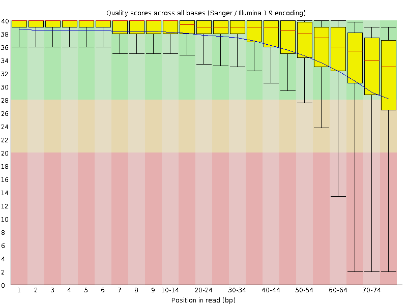
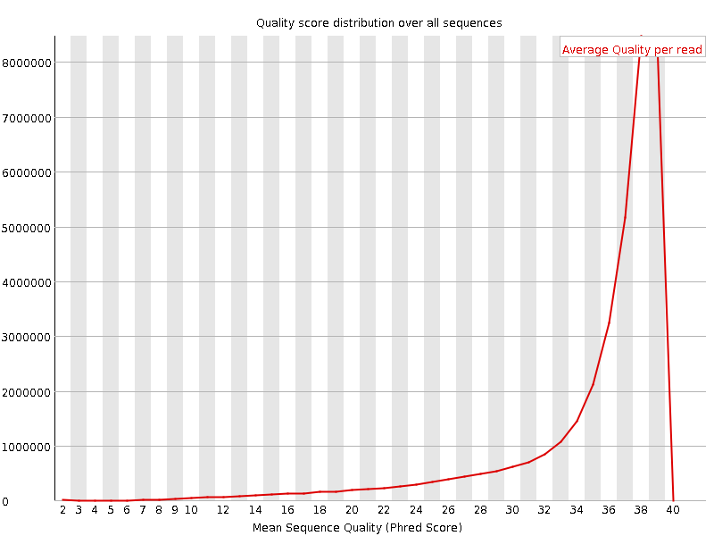
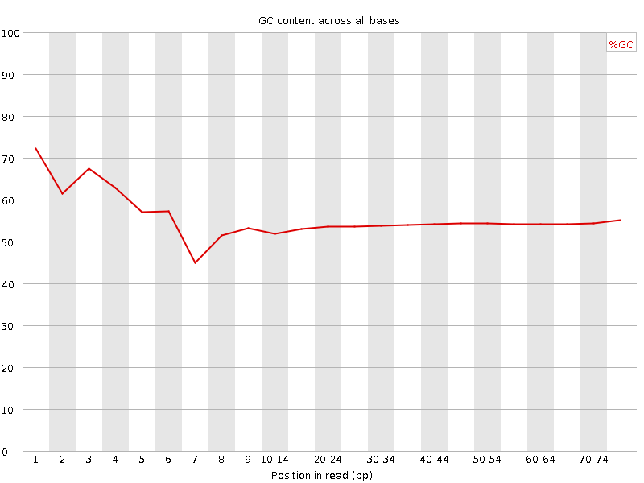
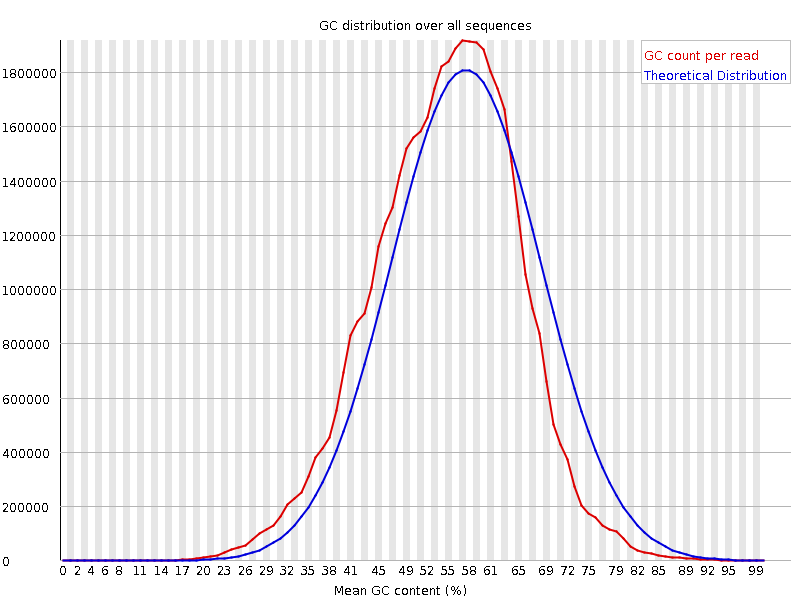
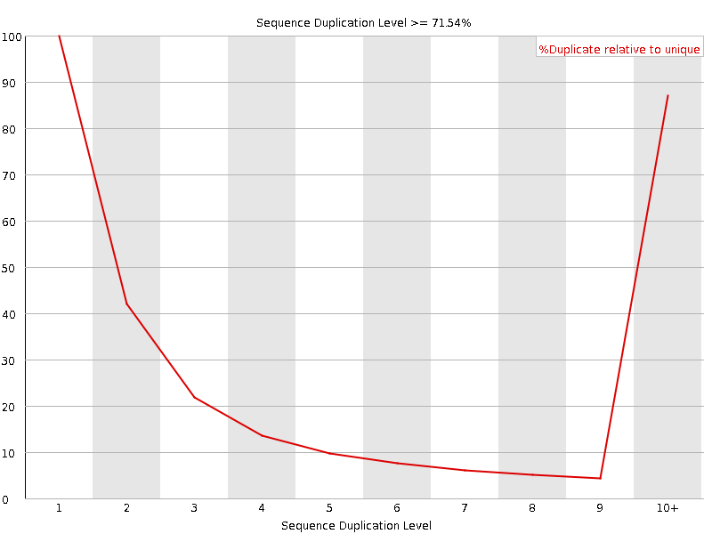
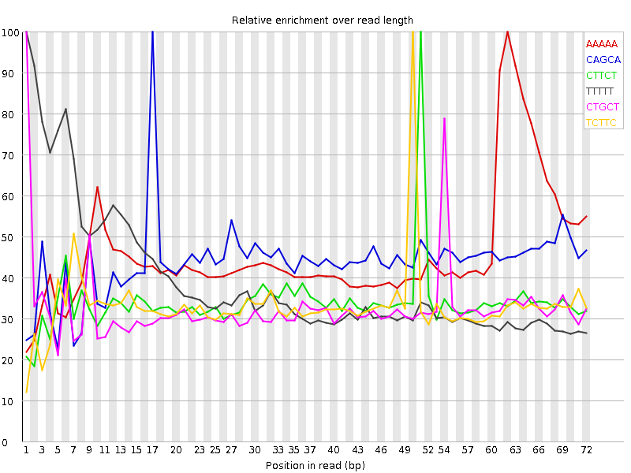

![[OK]](Icons/tick.png) Basic Statistics
Basic Statistics
| Measure | Value |
|---|---|
| Filename | SRR307912_1.fastq |
| File type | Conventional base calls |
| Encoding | Sanger / Illumina 1.9 |
| Total Sequences | 36877536 |
| Filtered Sequences | 0 |
| Sequence length | 76 |
| %GC | 54 |
Per base sequence quality

Per sequence quality scores

![[FAIL]](Icons/error.png) Per base sequence content
Per base sequence content

Per base GC content

![[WARN]](Icons/warning.png) Per sequence GC content
Per sequence GC content

Per base N content

Sequence Length Distribution

Sequence Duplication Levels

Overrepresented sequences
| Sequence | Count | Percentage | Possible Source |
|---|---|---|---|
| GATCGGAAGAGCGGTTCAGCAGGAATGCCGAGACCGATATCGTATGCCGT | 87427 | 0.23707386523871876 | Illumina Paired End PCR Primer 2 (98% over 50bp) |
| GGCAGACGTTCGAATGGGTCGTCGCCGCCACGGGGGGCGTGCGATCGGCC | 42550 | 0.11538189536307415 | No Hit |
Kmer Content

| Sequence | Count | Obs/Exp Overall | Obs/Exp Max | Max Obs/Exp Position |
|---|---|---|---|---|
| AAAAA | 6654300 | 3.7581143 | 8.196754 | 62 |
| CAGCA | 7805530 | 3.0031524 | 6.8200583 | 17 |
| CTTCT | 4758680 | 2.664383 | 7.8162675 | 51 |
| TTTTT | 3761465 | 2.5981636 | 6.6726694 | 1 |
| CTGCT | 5921610 | 2.4694004 | 7.5351305 | 1 |
| TCTTC | 4391665 | 2.4588916 | 7.4195547 | 50 |
| AGCAG | 6959025 | 2.2149537 | 5.4895453 | 18 |
| CAGGA | 6869625 | 2.1864989 | 5.4863186 | 20 |
| TGCTG | 6232225 | 2.1499884 | 7.182326 | 2 |
| GGCAG | 8438390 | 2.0825996 | 7.3910627 | 1 |
| GCTGG | 7836485 | 2.0135195 | 5.251691 | 3 |
| CTGGG | 7773150 | 1.9972463 | 5.276253 | 1 |
| TTCTG | 3928790 | 1.8197438 | 5.7938833 | 52 |
| TCAGC | 4461530 | 1.787093 | 5.999519 | 16 |
| GGAAG | 6708845 | 1.7664661 | 5.8384523 | 5 |
| AGGAA | 5196350 | 1.7645174 | 5.4746094 | 21 |
| TGGCA | 5266335 | 1.745071 | 5.097913 | 5 |
| GGGCA | 7001550 | 1.7279867 | 5.1721697 | 1 |
| TCTGC | 4072920 | 1.698469 | 5.3630753 | 53 |
| GAAGA | 4981760 | 1.6916494 | 6.3842964 | 6 |
| TTCAG | 3724885 | 1.6572037 | 6.2762027 | 15 |
| TGGGG | 7610815 | 1.6177336 | 5.415474 | 2 |
| GGGAG | 7461420 | 1.5233827 | 5.2362943 | 1 |
| GGGGG | 8916500 | 1.4116008 | 5.081161 | 1 |
| GTTCA | 3089800 | 1.3746539 | 5.812333 | 14 |
| AAGAG | 4044385 | 1.3733462 | 6.0014668 | 7 |
| GGGGA | 6706685 | 1.36929 | 6.0843706 | 1 |
| TGCTT | 2948995 | 1.3659204 | 5.2999816 | 55 |
| GTGGG | 6408235 | 1.3621166 | 7.263269 | 1 |
| ATGCC | 3349705 | 1.3417448 | 5.367505 | 25 |
| GTGGT | 4614065 | 1.3167943 | 5.1993003 | 1 |
| GTCTT | 2734615 | 1.2666236 | 5.668679 | 49 |
| GGGGT | 5774370 | 1.2273841 | 5.04305 | 1 |
| AGAGC | 3782755 | 1.2039944 | 5.006026 | 8 |
| TACAA | 2003955 | 1.1044159 | 5.404722 | 6 |
| AGACC | 2448855 | 0.94218904 | 5.1105466 | 31 |
| AATGC | 2081890 | 0.88967717 | 5.272614 | 24 |